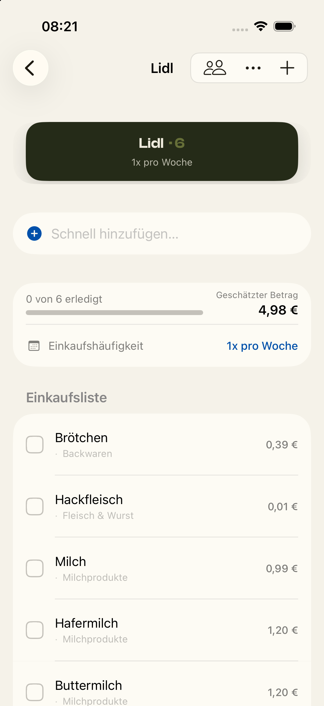

Restock · Fehler 10 · Entwurf vor Spec
Ein Preis, den die App vom Kassenbon gelernt hat, merkt sich die Zahl — aber nicht, worauf sie sich bezieht. Aus 4,99 € für eine Packung wird so ein Artikel für einen Cent. Unten steht links, was die App heute zeigt, und rechts drei Wege, wie sie es künftig zeigen könnte.
Heute
Kein Entwurf, kein Nachbau: Das ist ein Bildschirmfoto aus der laufenden App, aufgenommen unmittelbar nachdem ein Kassenbon gespeichert wurde.

Lidl-Liste, direkt nach dem Speichern des Bons. Markiert: der Artikelpreis und der Gesamtbetrag, den er verdirbt.
Hell — so sieht es jetzt aus
Dunkel — so sieht es jetzt aus
Drei Wege
Alle drei merken sich künftig, worauf sich ein gelernter Preis bezieht. Sie unterscheiden sich darin, was auf der Liste sichtbar wird, wenn die App eine Menge annehmen muss, die du nicht eingetippt hast.
Hell
Dunkel
Die App trägt die Menge ein, die sie belegen kann — zuerst deine eigene Eingabe, sonst die Menge, die du zuletzt in diesem Laden gekauft hast, sonst die Packungsgröße vom Bon. Sie steht an derselben Stelle wie eine selbst eingetippte Menge und lässt sich über „Bearbeiten“ ändern. Findet die App nichts, erfindet sie nichts: dann steht statt eines Gesamtpreises der Preis je Menge da — zweite Zeile im Bild.
Preis dafür: Aus „Hackfleisch“ auf deiner Liste wird sichtbar „400 g Hackfleisch“, auch wenn du nur den Namen eintippen wolltest.
Hell
Dunkel
Wie A, aber du siehst auf einen Blick, welche Menge von dir stammt und welche die App geraten hat: „ca.“ und die getönte Schrift gehören nur den angenommenen Mengen. Tippst du die Menge selbst ein, sieht die Zeile aus wie in A.
Preis dafür: Die App muss sich zusätzlich merken, woher jede Menge stammt, und die Liste braucht eine neue Darstellungsregel. Das sprengt den Rahmen dieser Korrektur und wäre eine eigene Aufgabe.
Hell
Dunkel
Die Liste sieht aus wie heute — nur eben ohne den Cent-Betrag. Passt der gelernte Preis nicht zur Menge am Artikel, wirft die App ihn weg und schätzt wie bei einem unbekannten Artikel. Keine Menge wird vorbelegt, nichts wird angenommen, nichts ändert sich am Aussehen der Liste. Der Beispielbetrag oben ist eine solche Schätzung.
Preis dafür: Der echte, vom Bon gelernte Preis wird jedes Mal verworfen, obwohl die App ihn kennt. Du kaufst dasselbe Hackfleisch zum vierten Mal und siehst weiter eine Schätzung statt der 4,99 €, die auf deinem letzten Bon standen. Das kippt deine Festlegung aus der Aufnahme, dass die Menge vorbelegt werden soll.
Nebenwirkung
Alle bisher gelernten Preise haben keine Bezugsgröße und werden deshalb nicht mehr angewendet — so hast du es in der Aufnahme entschieden. Bis zum nächsten Bon-Scan zeigt die Liste dort wieder Schätzwerte statt der zuletzt bezahlten Beträge. Das betrifft jeden Artikel einmal, danach ist der Preis mit Bezugsgröße neu gelernt. Das nachträgliche Reparieren der Altdaten bleibt eine eigene Aufgabe.
Deine Entscheidung
Ich empfehle A. Sie behebt den Fehler vollständig, kommt ohne ein neues Bedienelement aus und bleibt im Rahmen dieser Korrektur. B ist das schönere Ziel, aber eine eigene Aufgabe wert. C ist die ehrlichste kleine Lösung und zugleich die, die deinen gelernten Preis am häufigsten wegwirft.